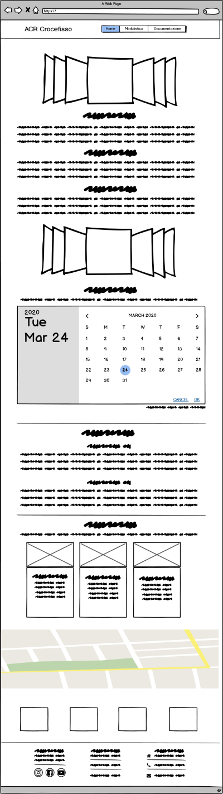
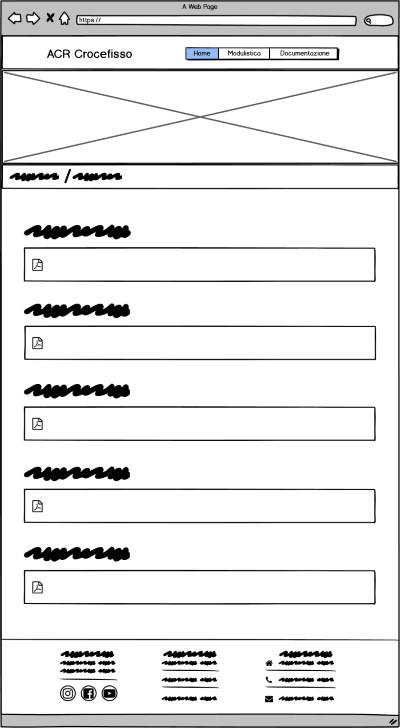

Abcstract
qui ci sarà l'abcstract
Project Management Plan
Benckmarching
Gli obiettivi del sito sono, facilitare le iscrizioni all’associazione e fornire tutte le informazioni relative alle attività proposte sia da essa che dalla parrocchia; il target principale è il genitore che vuole iscrivere il proprio figlio all’ Azione Cattolica e il ragazzo già iscritto che necessita di informazioni tecniche.
Analizzando la struttura del sito i competitors più simili sono quelli inerenti allo stesso campo ovvero il sito dell’Azione Cattolica Italiana, che offre una sezione di modulistica e una pagina di informazioni sulle attività principali; il sito della Diocesi di Rimini e la pagina web della Parrocchia, con tutte le notizie del dinamismo di essa.Struttura e layout
Struttura ad albero
Wireframe

Look and Feel
Ho usato elementi dinamici ma chiari che permettono la navigazione completa di tutte le pagine; il testo al centro rende le pagine più visibili e scorrevoli, usando il font Relway non troppo serioso ma elegante. Il colore blu riprende quello principale dell'associazione e fa risaltare tutti gli elementi sullo sfondo bianco e usando più sfumature di esso si evita la ripetizione monocromatica; mentre il viola c'è solo su bottoni e la parte di modulistica per mettere in primo piano elementi fondamentali.
I linguaggi web utilizzati per la realizzazione del sito sono: html, css e java script; mentre gli strumenti per il supporto della progettazione sono: Markups (B-hero) per l’utilizzo del template; sublime text per la parte di scrittura del programma; bootstrap e favicon per la parte grafica e le icone; Google Calendar per la creazione del calendario e infine GitHub per la pubblicazione.
Comunication strategy
Background
Obiettivi comunicativi
Il sito è rivolto a tutte le persone (della provincia di Rimini) che sono interessate ad iscriversi all'associazione e cercano informazioni concrete su di essa (come per esempio i moduli).
Target audience e messaggio
Il target principale sarebbe un genitore in cerca di un' attività extrascolastica per suo figlio, ma ciò non toglie che anche un ragazzo interessato possa consultarlo per informarsi sulle attività, quindi il sito è strutturato in modo da accogliere anche le richieste di un target più giovane. Il messaggio che il sito trasmette è il desiderio di scoprire nuove attività ed associarsi con la parrocchia.
Promozione
La promozione del sito è prevalentemente on-line tramite i social.